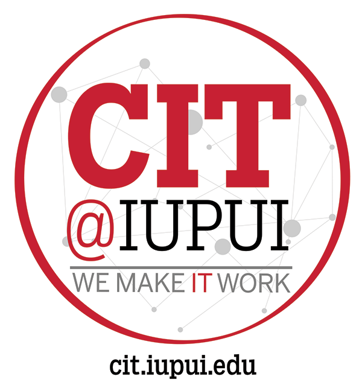
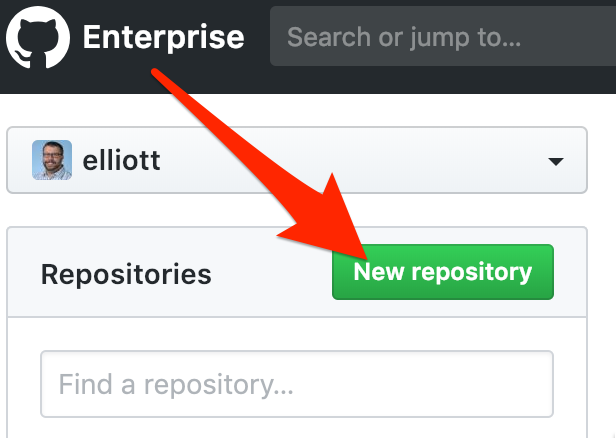
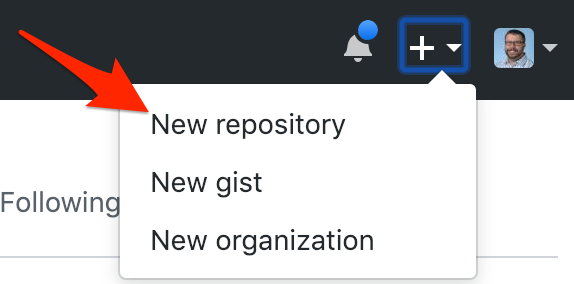

A few students have asked for a quick review of the Git commands we performed in class. While we will soon do a much deeper dive into Git, this should provide you with an overview of the steps you need for a basic local/remote Git repository setup using GitHub.IU. |  |
Git is the most common version control system (VCS) in use today. You can use Git locally to manage your projects, but its true power comes in its remote features and collaborative capabilities.
Projects managed by Git are referred to as repositories. On your development machine, you'll have a local repository that is then paired with a remote repository stored elsewhere.
We will use GitHub as the place where we store our remote repositories for this tutorial.
GitHub is an online service where creators can create, store, manage, and collaborate on their projects. Using GitHub is free.
IU has a separate enterprise instance of GitHub (referred to as "GitHub.IU") to support work by Faculty, Students, and Staff. While it has most of the same features as the traditional GitHub, there are a few differences.
Students are encouraged to use GitHub.IU for classwork and personal development projects. Students should consider building and maintaining a more "professional" public GitHub profile on GitHub.com for use when searching for internship and career opportunities.
While practicing, it is recommended that you work through this lab with a completely new folder and repository.
You may refer back to this lab whenever you need to review the commands while working with your "real" projects.
Create a new directory that will house our gitpractice repository. Then enter that directory
mkdir gitpractice
cd gitpracticeCreate an empty text file so we have something to push to GitHub.IU
touch sample.txtYour remote repository will be stored on the GitHub.IU service.
In a browser on your host OS, log into GitHub.IU.
Connect with your standard IU username and passphrase. You will not need to use two-factor authentication for this service.
Once logged in, create a new remote repository. There are a few ways to do this.
When you first log in, you can click the "New Repository" button. Other pages within GitHub have a similar button that just says "New." Both perform the same action. |  |
Alternatively, you can go to the "+" symbol in the top right of the browser window and choose the "New Repository" option. |  |
Give your repository a logical name. You'll end up with many repositories, so organizing them now is a very good idea.
For this lab, we will use the name
cit_gitpractice
The next GitHub page takes you to your empty repository and walks you through the steps to add content to it. These steps will be described in the upcoming sections of this Codelab.
Return to your development machine and ensure you are working in your gitpractice directory.
On the command line, create a new local repository.
git init
The local repository does not require a name. By convention, there is only ONE repository per project.
You now have a remote Git repository stored on GitHub.IU and a local Git repository stored within your development machine.
Both of these repositories are currently empty.
You will work locally to develop your project. As you work you will be able to store "snapshots" of your progress. Git calls these snapshots commits. Commits are automatically stored in your local Git repository.
When you want to store or share your work, you will move the contents of your local Git repository to the remote Git repository. Git calls this process a push.
You must now "marry" the two repositories together so that they know they are related.
git remote add origin https://github.iu.edu/username/cit_gitpractice.git
This command tells the local repository that its remote counterpart is on the GitHub.IU site under your user account, and has the repository name "cit_gitpractice" (all repositories end in ".git")
origin
is a nickname that you are giving for this specific remote repository. "origin" is the default term for a remote, so we will use that here.
The git remote command will not return a success message. You will be returned to your terminal prompt.
You have successfully configured your repositories so that they can exchange information.
When making a new commit, you must ensure that any new files are added to the local repository.
git add .
The "." tells Git to add all of the files and directories within the current directory.
Once all files have been added, create your commit. When making a commit, you should enter a message that describes what has changed in the project since the previous commit. Make sure the language you use in your commit messages will make sense to you and any potential future collaborators.
git commit -m "This is my first commit"
Your commit (snapshot) is stored locally within the local Git repository.
When you are ready, you may move your commited files from the local to the remote repository.
git push -u origin master
git initiates the Git software. All Git commands start by opening "git."
push is the action that transfers the committed contents of the local repository to the remote repository you connected to earlier.
-u indicates which "upstream" branch we are working with. We will discuss branching in a future lab. Continue to use this command because it is an important habit to have.
origin is the nickname for the remote repository you connected earlier. A local Git repository can connect to multiple remote repositories, so you must specify the destination - even if there is only one remote.
master is the default name for the working branch of your project. Branching will be discussed in a future lab.
Go back to your browser and refresh your GitHub.IU page for the remote repository. You should see your new, empty sample.txt file listed as the only file in the repository.